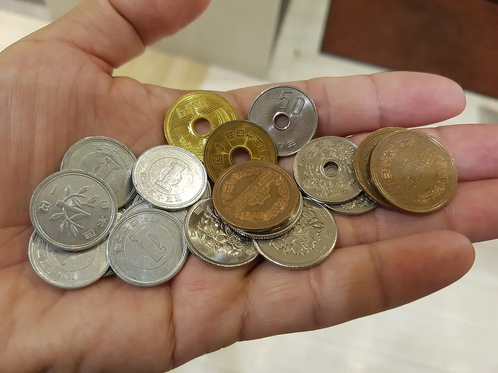
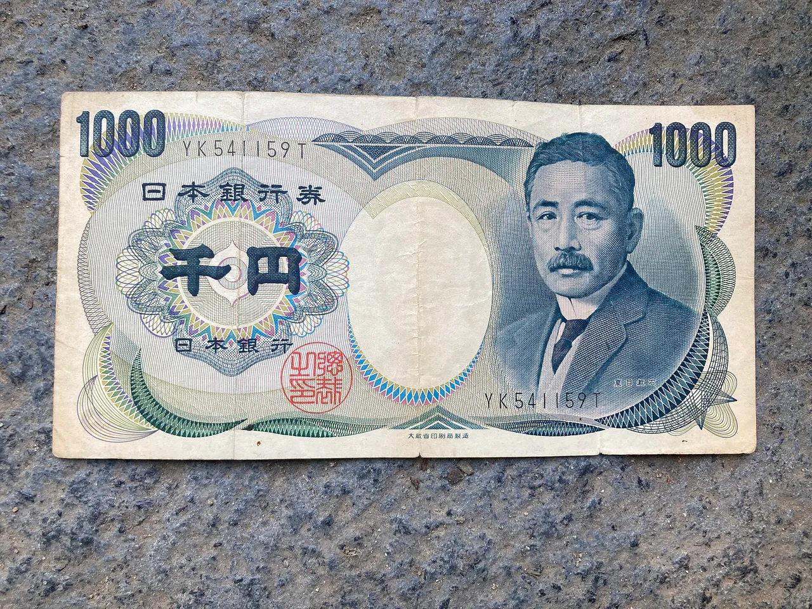

Cash or Card in Japan in 2026: How Much Yen to Actually Carry
In 2026, Japan is card-first: a tap-to-pay IC card plus one credit card covers most of a normal day. Cash still matters in some places — the only real question is how much. Short answer: about ¥20,000, refilled as you go.

We re-test this every trip across all 47 prefectures. Here is what actually works.
Card-first, cash for the gaps. One IC card (Suica or ICOCA) plus one Visa or Mastercard covers roughly 85–90% of a trip. Carry about ¥20,000 in cash for small restaurants, shrines, festivals, and rural spots, and top it up at 7-Eleven ATMs, which take foreign cards.
Quick answers
Q. How much cash should I bring to Japan in 2026?
A. For a tourist, carry around ¥20,000 in notes at any time and refill from an ATM as you spend it. You do not need to arrive with a large stack. An IC card and one credit card handle most of the day, and 7-Eleven ATMs take foreign cards, so it is easier to top up there than to carry two weeks of cash at once.
Q. Can I use credit cards in Japan now?
A. In most hotels, chain restaurants, department stores, convenience stores, and large shops, yes. Visa and Mastercard are the safest to carry. Smaller family-run places, some shrines, and rural spots are still cash-only, which is why you keep yen on hand.
Q. Is one IC card (Suica or ICOCA) enough for the whole trip?
A. For most trips, yes. One IC card works on almost every train, subway, and bus nationwide, and pays at convenience stores and many shops. A mobile Suica or PASMO in Apple Wallet or Google Wallet is the simplest version because you top it up from your phone.
Q. Can I use foreign cards at Japanese ATMs?
A. Yes, at the right machines. 7-Eleven / Seven Bank ATMs accept foreign-issued cards and have an English menu, and Japan Post Bank ATMs do too. Many bank-branch ATMs do not, so look for a 7-Eleven first.
The 2026 reality: card-first, cash for the gaps
An IC card plus one credit card covers roughly 85–90% of a trip. The rest is cash. What each handles:
- IC card — trains, subways, buses, convenience stores.
- Credit card — hotels, department stores, larger restaurants, most attractions.
- Cash — small meals, local shops, anywhere with no card terminal.
Carry about ¥20,000 in notes and top up as you go. Carrying cash is low-risk here: crime levels are low and locals routinely walk around with notes. japan.travel — money and payment
USUALLY TAKES CARDS
- Hotels and business hotels
- Convenience stores (konbini)
- Department stores and chains
- Chain and mid-size restaurants
- Major attractions and museums
- Supermarkets and drugstores
OFTEN CASH ONLY
- Small family restaurants
- Tiny izakaya and counter bars
- Shrine and temple offerings
- Festival and street stalls
- Some rural ryokan and guesthouses
- Older local shops and markets
| Where | Credit card | IC card | Cash |
|---|---|---|---|
| Trains, subways, buses | Sometimes | Yes | Yes |
| Convenience stores | Yes | Yes | Yes |
| Hotels & department stores | Yes | Rarely | Yes |
| Chain & mid-size restaurants | Usually | Sometimes | Yes |
| Small family restaurants & izakaya | Often no | Rarely | Yes |
| Shrines, festivals, rural stalls | No | No | Yes |
| Vending machines | Rarely | Yes | Yes |
Where cash is still required

The cash-only spots are often the best ones. Keep yen for:
- Small family restaurants and counter bars (they avoid card fees)
- Shrine and temple offering boxes — a ¥5 coin, go-en, puns on "good fortune"
- Festival and street-food stalls
- Some rural ryokan and guesthouses, even modern-looking ones
Before you sit down somewhere small, it is fine to ask first.
If the answer is no, you pay in cash, and that is the whole reason for the ¥20,000. For the wider question of what a day in Japan actually costs, see our honest 2026 budget guide.
IC cards and mobile Suica/PASMO
One IC card works nationwide — get one per person. Suica, PASMO, and ICOCA are the same idea; you do not need a different card per city. You tap it for transit and at convenience stores, vending machines, and many shops.
- Easiest — mobile Suica/PASMO in Apple Wallet or Google Wallet; top up from your phone.
- Physical — the Welcome Suica, sold to visitors at major airports and stations.
- Two travellers — one card each; you cannot tap one card twice through a gate.
CHECK YOUR PHONE BEFORE YOU RELY ON MOBILE SUICA
Mobile Suica and PASMO work on iPhones and on Apple Watch, and on Android phones that support the right contactless type. Some Android models bought outside Japan cannot add a Japanese transit card, so confirm your specific phone supports it before your trip and keep a physical IC card option in mind as a backup.
ATMs that take foreign cards
Use 7-Eleven (Seven Bank) ATMs first. They take overseas cards, have an English menu, and are everywhere, including late at night.
- 7-Eleven / Seven Bank — the reliable default. supported cards (official)
- Japan Post Bank (at post offices) — also takes many foreign cards; handy in small towns.
- Plain bank-branch ATMs — often reject foreign cards. If one declines you, walk to a 7-Eleven.
Your home bank may add its own foreign-withdrawal fee, separate from the Japanese ATM.
Some links above are affiliate links. We may earn a commission at no extra cost to you. We only list services we'd use ourselves.
Plan yours: cash & rail in 10 seconds
A rough guide, not a quote. Price your exact route on the official JR Pass site before buying.
How much to carry, in one line
Per traveller: 1 IC card + 1 credit card (Visa/Mastercard) + about ¥20,000 cash, refilled at 7-Eleven.
- IC card → transit and konbini
- Credit card → hotels and bigger restaurants
- Cash → the places that still take only yen
This mix has worked for our family across all 47 prefectures.
Two follow-ups worth reading before you book: the 2026 fees and rules that changed (departure tax, tax-free shopping, and more), and our honest cost guide for the real daily budget. If you are moving here rather than visiting, the cash-and-card picture is different, so start with our relocation guide, which covers opening a Japanese bank account.
Some links above are affiliate links. We may earn a commission at no extra cost to you. We only list services we'd use ourselves.
Japan National Tourism Organization (JNTO) — plan your trip: money and payment
JR East — Suica IC card and mobile Suica
Seven Bank — ATM service for international cards